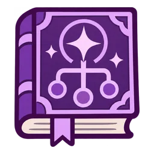

불 · 물 · 얼음 · 전기 · 대지. 다섯 원소로 나만의 마법을 키워 보세요.
1차 각성, 3종 각성 스킬과 18종 각성 직업으로 새로운 모험을 시작하세요.
마검사 · 대마도사 · 신성술사, 전용 마법진과 새로운 각성 스킬.

30종 원소·융합 마법
장비 이미지와 교환 재료
강화, 드랍, 젠, 카드 확률
몬스터, 보스, 포탈
온라인 협력 및 분배
성장 기록과 보상
기존 런처를 사용하면 최신 버전으로 업데이트할 수 있습니다.